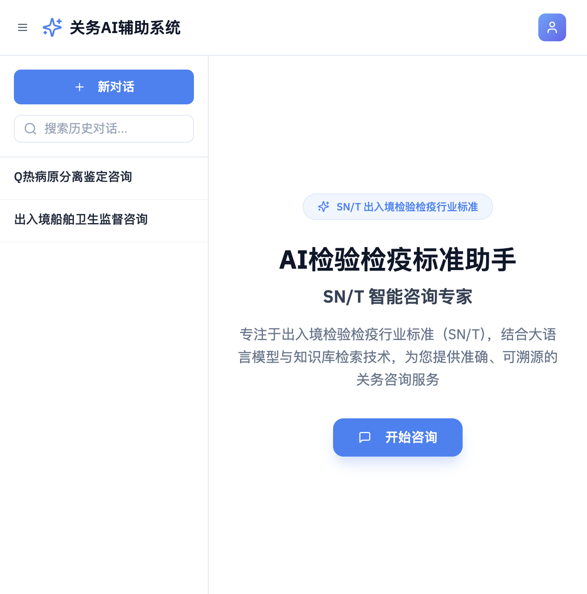
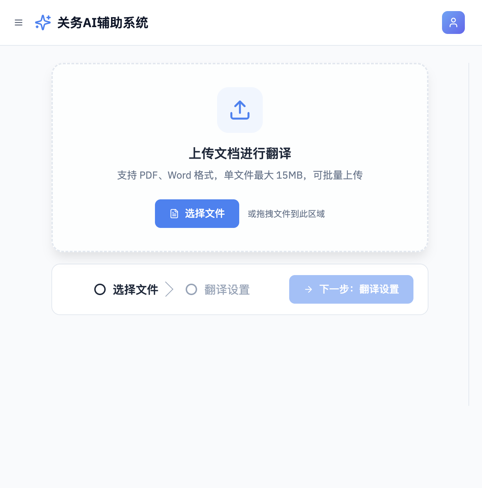
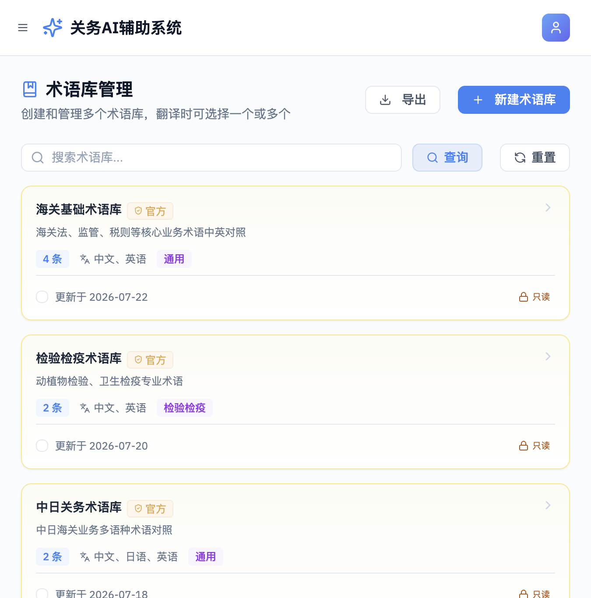
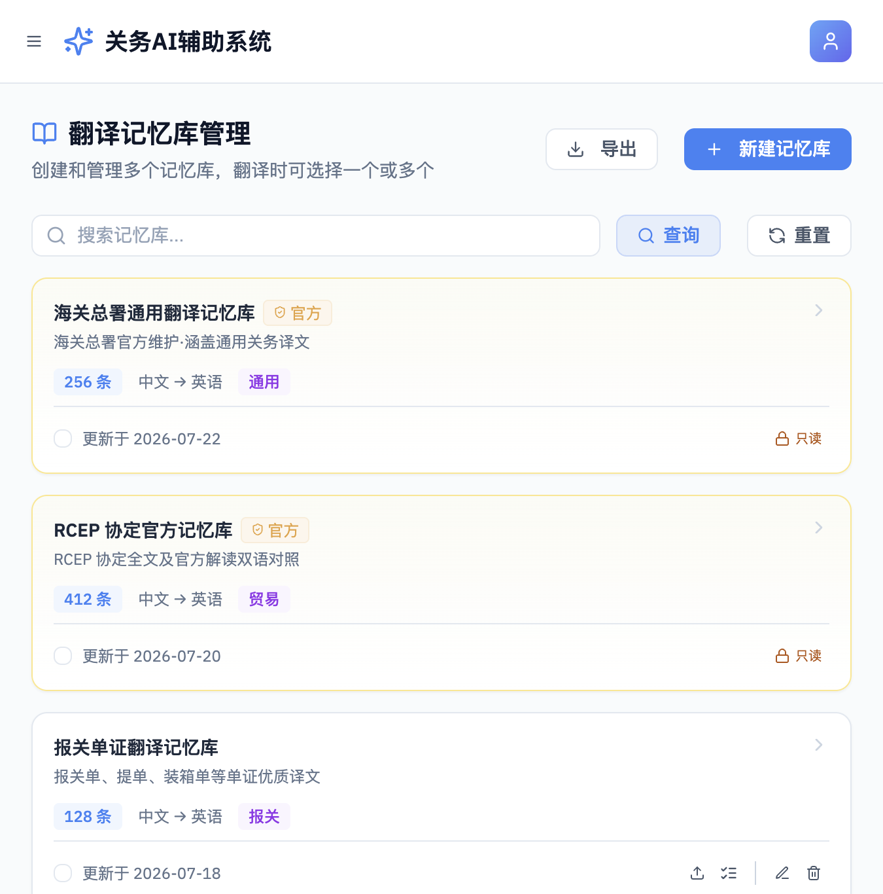
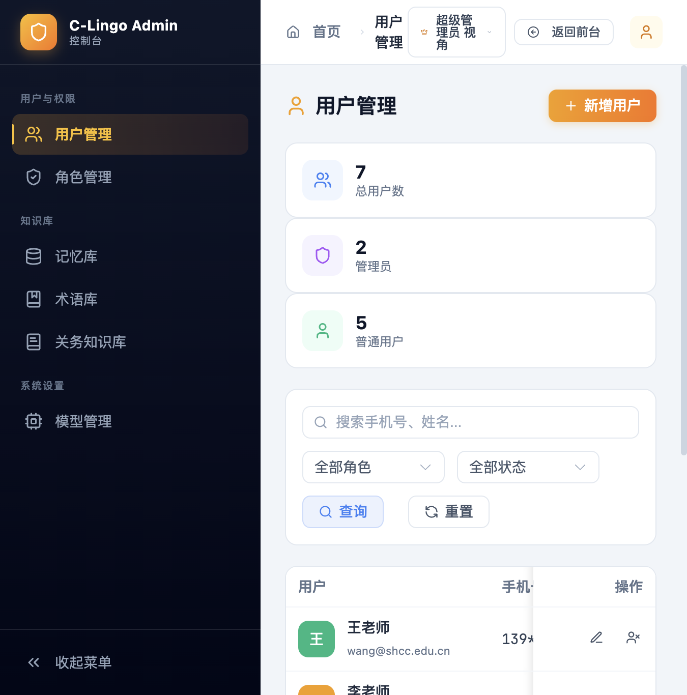

让跨境贸易语言不再是障碍。
智能翻译 · AI 咨询 · 术语记忆，一体化关务专业平台。

关务行业涉及大量专业术语、法规标准和进出口文档，传统翻译工具难以满足行业精准度要求。 报关员、单证员在日常工作中频繁面临术语不统一、翻译效率低、标准难查找等痛点。
C-Lingo 正是为解决这一问题而生——它不是又一个通用翻译工具，而是深度聚焦关务场景的 AI 辅助平台。 通过整合专业语料库、术语库与大语言模型，为关务从业者提供精准、可溯源、高效率的智能服务。
基于关务专业语料训练，翻译准确率远超通用工具
翻译记忆+术语库双引擎，重复内容零成本复用
所有 AI 输出均关联标准依据，支持溯源查证
覆盖关务工作全场景，从翻译到咨询，从个人使用到企业管理
24 小时关务顾问，秒级解答进出口政策、商品归类、报关流程等专业问题，所有回答均附标准依据
支持 PDF / Word / Excel 等多格式专业文档翻译，智能保留排版格式，术语自动匹配企业词库
即输即译的轻量翻译工具，支持中英双向互译，内置关务专业术语引擎，翻译结果实时润色
自定义企业级术语库，支持批量导入导出，统一翻译口径，团队协作更高效，越用越精准
历史翻译内容自动记忆存储，相似内容智能推荐复用，大幅降低重复翻译成本，提升团队效率
完整记录所有翻译轨迹，支持按时间、类型、关键词多维搜索回溯，一键查看详情与批量导出
清晰的信息架构，专业的视觉语言，让复杂关务工作变得简单

文档翻译
术语库
记忆库
管理后台完善的后台管理能力，满足企业级部署与团队协作需求
灵活的权限体系，支持多角色、多部门分级管理
统一管理企业语料资源和行业标准，持续优化模型效果
支持多模型切换与参数调优，按需匹配不同业务场景
使用数据可视化看板，洞察团队效率与系统表现
以专业为底色，以效率为目标，打造值得信赖的关务 AI 工具
深度贴合关务行业场景，不是通用 AI 工具的简单套壳。从术语体系到工作流，全部围绕关务人员真实需求设计。
减少操作路径，核心功能 3 步触达。翻译记忆、术语推荐、批量处理，每一个设计决策都以"省时间"为衡量标准。
蓝色主调传递专业与可信，界面模块化降低认知成本。在复杂功能与简洁体验之间，找到恰到好处的平衡点。